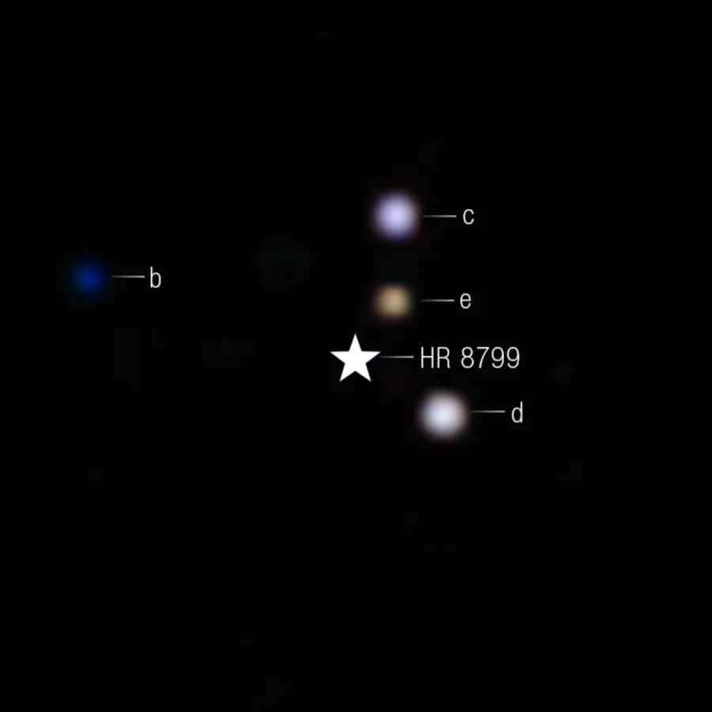

March 17, 2025
HR 8799: four giant planets imaged, carbon dioxide detected
The James Webb Space Telescope has directly imaged the four giant planets HR 8799 b, c, d and e. The coronagraph of the NIRCam camera blocks out the star, which is about 130 light-years away. At about 30 million years, the system is young, and the planets still glow strongly in the infrared.
The measurements show carbon dioxide in all four planets and thus a sizable fraction of heavy elements. This suggests that they formed like Jupiter and Saturn: by slowly building solid cores that then gather gas. HR 8799 b, at a distance of 10.1 billion kilometers, is the coldest; HR 8799 e orbits the star at 2.4 billion kilometers.
Source: ESA/Webb: "Webb images young, giant exoplanets, detects carbon dioxide", 2025-03-17